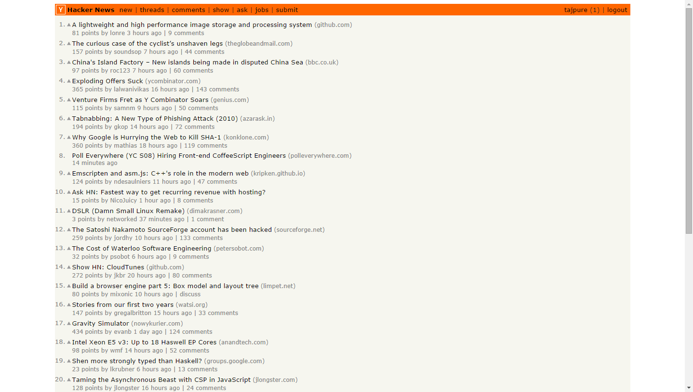
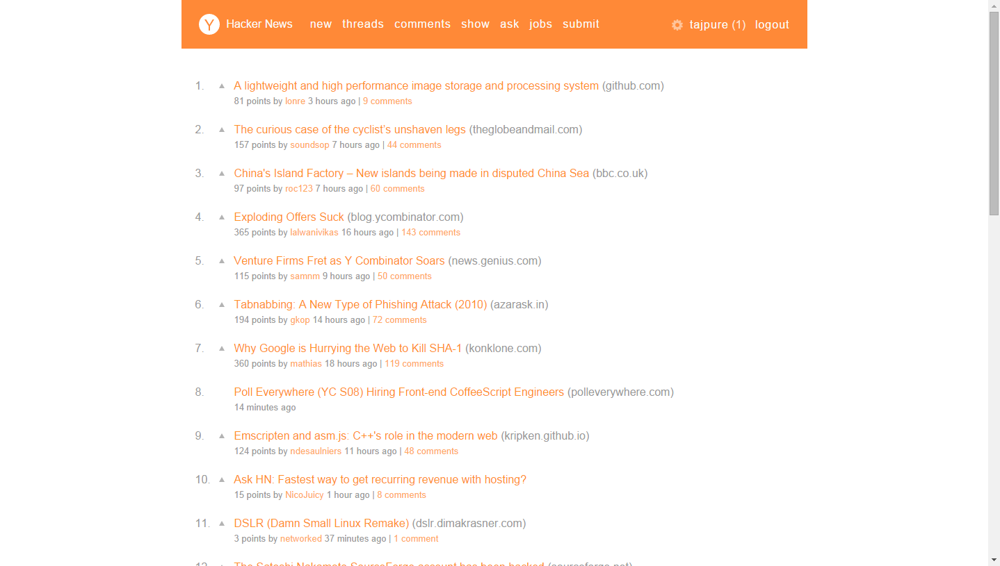

<!DOCTYPE html>
<html>
<head><meta name="generator" content="Hexo 3.9.0">
  <meta charset="utf-8">
  
  <title>HN Special,一款Hacker News的界面优化插件 | TAJPURE</title>
  <meta name="mobile-web-app-capable" content="yes">
  <meta name="viewport" content="width=device-width">
  <meta name="description" content="Hacker News作为著名创业孵化器Y Combinator的新闻站点，上面聚集了一大批优秀的程序员与十分优质的内容，可是它的界面实在是不够友好。例如：">
<meta name="keywords" content="chrome插件,Hacker News">
<meta property="og:type" content="article">
<meta property="og:title" content="HN Special,一款Hacker News的界面优化插件">
<meta property="og:url" content="https://tajpure.com/2014/09/09/HN-Special,一款Hacker-News的界面优化插件/index.html">
<meta property="og:site_name" content="TAJPURE">
<meta property="og:description" content="Hacker News作为著名创业孵化器Y Combinator的新闻站点，上面聚集了一大批优秀的程序员与十分优质的内容，可是它的界面实在是不够友好。例如：">
<meta property="og:locale" content="en">
<meta property="og:image" content="https://tajpure.com/image/HN_before.png">
<meta property="og:image" content="https://tajpure.com/image/HN_after.png">
<meta property="og:updated_time" content="2019-07-05T01:55:22.000Z">
<meta name="twitter:card" content="summary">
<meta name="twitter:title" content="HN Special,一款Hacker News的界面优化插件">
<meta name="twitter:description" content="Hacker News作为著名创业孵化器Y Combinator的新闻站点，上面聚集了一大批优秀的程序员与十分优质的内容，可是它的界面实在是不够友好。例如：">
<meta name="twitter:image" content="https://tajpure.com/image/HN_before.png">
  
    <link rel="alternative" href="/atom.xml" title="TAJPURE" type="application/atom+xml">
  
  
    <link rel="icon" href="/favicon.ico">
  
  <link rel="stylesheet" href="/css/style.css">
  <!--[if lt IE 9]><script src="//html5shiv.googlecode.com/svn/trunk/html5.js"></script><![endif]-->
  
<script type="text/javascript">
  var _gaq = _gaq || [];
  _gaq.push(['_setAccount', 'tajpure@gmail.com']);
  _gaq.push(['_trackPageview']);

  (function() {
    var ga = document.createElement('script'); ga.type = 'text/javascript'; ga.async = true;
    ga.src = ('https:' == document.location.protocol ? 'https://ssl' : 'http://www') + '.google-analytics.com/ga.js';
    var s = document.getElementsByTagName('script')[0]; s.parentNode.insertBefore(ga, s);
  })();
</script>

  <script type="text/javascript" src="/js/material.min.js"></script>
  <link rel="stylesheet" href="/css/material.min.css" type="text/css">
  <link href="https://fonts.googleapis.com/icon?family=Material+Icons" rel="stylesheet">
</head>
</html>
<body>
  <div id="container">
    <div class="mobile-nav-panel">
	<ul class="nav mdl-menu mdl-js-menu mdl-menu--bottom-left mdl-js-ripple-effect" for="menubtn">
		<li  class="mdl-menu__item"><a href="/" style="color:#757575">Home</a></li><li  class="mdl-menu__item"><a href="/archives" style="color:#757575">Archives</a></li><li  class="mdl-menu__item"><a href="/about" style="color:#757575">About</a></li>
		<li  class="mdl-menu__item"><a href="/atom.xml"
			class="nav-icon" title="RSS Feed" style="color:#757575">RSS</a></li>
	</ul>
	<button id="menubtn" class="mdl-button mdl-js-button mdl-js-ripple-effect mdl-button--icon">
		<i class="material-icons" role="presentation">menu</i>
		<span class="visuallyhidden">show menu</span>
	</button>
</div>
<header id="header">
	<nav class="nav">
		<ul>
			<li><a href="/" style="color:#757575">Home</a></li><li><a href="/archives" style="color:#757575">Archives</a></li><li><a href="/about" style="color:#757575">About</a></li>
			<li><a href="/atom.xml"  class="nav-icon" style="color:#757575" title="RSS Feed">RSS</a></li>
		</ul>
	</nav>
</header>

    <div id="main">
      <article id="post-HN-Special,一款Hacker-News的界面优化插件" class="post mdl-card mdl-shadow--2dp" style="width:100%;">
	
	<div class="entry-meta-header date">
		<time datetime="2014-09-09T12:12:36.000Z" itemprop="datePublished">Sep 9 2014</time>

  </div>
	<div class="mdl-card__title">
		
  
    <h1 class="article-title entry-title" itemprop="name">
      HN Special,一款Hacker News的界面优化插件
    </h1>
  


	</div>
	<div class="mdl-card__supporting-text" style="margin-top: -1em">
		
    	<p>Hacker News作为著名创业孵化器Y Combinator的新闻站点，上面聚集了一大批优秀的程序员与十分优质的内容，可是它的界面实在是不够友好。例如：<br> <br><a id="more"></a></p>
<p>由于内容全部堆积在一起，使用浏览器查看时觉得十分沉重，体验不好。为了解决这个问题，我觉得可以利用浏览器插件对其界面进行优化。于是下意识的搜索了相应的插件，于是发现了这个：HN Special，这个插件十分好用，作者添加的特性如下：</p>
<ul>
<li>A modern looking visual theme</li>
<li>Infinite scrolling</li>
<li>Open links in new tab</li>
<li>More accurate domain names</li>
<li>Comment folding</li>
<li>Mark as read</li>
<li>Sticky header</li>
<li>Grey visited links</li>
<li>User information tooltips</li>
</ul>
<p>使用该插件之后的界面：<br> </p>
<p>界面清爽了很多，另外发现该作者竟然也是风靡全球的游戏”2048”的作者（Gabriele Cirulli），并且还非常年轻。</p>

    
	</div>
	
    
<nav id="article-nav">
  
    <a href="/2014/11/05/CentOS7扩展源/" id="article-nav-newer" class="article-nav-link-wrap">
      <strong class="article-nav-caption">Newer</strong>
      <div class="article-nav-title">
        
          CentOS7扩展源
        
      </div>
    </a>
  
  
    <a href="/2014/09/09/Vimium的简单试用/" id="article-nav-older" class="article-nav-link-wrap">
      <strong class="article-nav-caption">Older</strong>
      <div class="article-nav-title">
        
          Vimium的简单试用
        
      </div>
    </a>
  
</nav>

  

	
	<section id="comments">
	  <div id="disqus_thread" style="padding:20px;">
	    <noscript>Please enable JavaScript to view the <a href="//disqus.com/?ref_noscript">comments powered by Disqus.</a></noscript>
	  </div>
	</section>
	
</article>

    </div>
    <!-- <div class="mb-search">
  <form action="//google.com/search" method="get" accept-charset="utf-8">
    <input type="search" name="q" results="0" placeholder="Search">
    <input type="hidden" name="q" value="site:tajpure.com">
  </form>
</div> -->
<footer id="footer">
	<span class="copyright">
    &copy; 2012-2019 tajpure<br>
	</span>
  <br>
	<!-- ICON NEEDS FONT AWESOME FOR CHEVRON UP ICON -->
	<link href="//netdna.bootstrapcdn.com/font-awesome/3.2.1/css/font-awesome.css" rel="stylesheet">
	<a href="javascript:" id="return-to-top"><i class="icon-chevron-up"></i></a>
</footer>

    
<script>
  var disqus_shortname = 'tajpure';
  
  var disqus_url = 'https://tajpure.com/2014/09/09/HN-Special,一款Hacker-News的界面优化插件/';
  
  (function(){
    var dsq = document.createElement('script');
    dsq.type = 'text/javascript';
    dsq.async = true;
    dsq.src = '//go.disqus.com/embed.js';
    (document.getElementsByTagName('head')[0] || document.getElementsByTagName('body')[0]).appendChild(dsq);
  })();
</script>


<script src="https://www.tajpure.com/js/jquery.min.js"></script>


<script src="/js/script.js"></script>

  </div>
</body>
</html>
